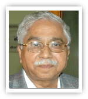

|

|
| ಜನನ |
2 ಜನವರಿ 1937, ಗಡಗ ಜಿಲ್ಲೆ
|
| ವೃತ್ತಿ |
ಪ್ರಮುಖ ಪಾತ್ರಗಳು
ಕವಿ, ನಾಟಕಕಾರ, ಚಲನಚಿತ್ರ ನಿರ್ದೇಶಕ, ಅಕಾಡೆಮಿ ಅಧ್ಯಕ್ಷ
- ಜನಪದ ಹಾಗೂ ಗ್ರಾಮೀಣ ಬದುಕಿನ ನೈಜತೆಯನ್ನು ಸಾಹಿತ್ಯಕ್ಕೆ ತಂದವರು
- ಸಂಗೀತ, ಕಾವ್ಯ, ನಾಟಕ—ಎಲ್ಲದನ್ನೂ ಸಂಯೋಜಿಸಿದ ಬಹುಮುಖ ಕಲಾವಿದ
- ಕನ್ನಡ ಫಿಲ್ಮ್ ಮತ್ತು ರಂಗಭೂಮಿಯಲ್ಲಿ ಹೊಸ ಅಸ್ತಿತ್ವವನ್ನು ನಿರ್ಮಿಸಿದವರು
- ಕನ್ನಡ ವಿಶ್ವವಿದ್ಯಾಲಯ (ಹಂಪಿ) ಯ ಮೊದಲ ಉಪಕುಲಪತಿ
|
| ಪ್ರಶಸ್ತಿ |
ಗೌರವಗಳು ಮತ್ತು ಪ್ರಶಸ್ತಿಗಳು
- ಜ್ಞಾನಪೀಠ ಪ್ರಶಸ್ತಿ (2010)
- ಪದ್ಮಶ್ರೀ ಪ್ರಶಸ್ತಿ
- ಕೇಂದ್ರ ಸಾಹಿತ್ಯ ಅಕಾಡೆಮಿ ಪ್ರಶಸ್ತಿ
- ಕರ್ನಾಟಕ ರಾಜ್ಯೋತ್ಸವ ಪ್ರಶಸ್ತಿ
- ಕನ್ನಡ ಸಾಹಿತ್ಯ ಅಕಾಡೆಮಿ ಗೌರವ
|
| ಸಂಕ್ಷಿಪ್ತ ವಿವರಣೆ |
ಸಾರಾಂಶ (ಸಾಹಿತ್ಯ ಮತ್ತು ಶೈಲಿ)
ಡಾ. ಚಂದ್ರಶೇಖರ ಕಂಬಾರ ಅವರು ಜನಪದ ಮತ್ತು ಗ್ರಾಮೀಣ ಸಂಸ್ಕೃತಿಯ ಮೂನೆ ರಂಗವನ್ನು ಸಾಹಿತ್ಯಕ್ಕೆ
ಶಕ್ತಿಯಿಂದ ತಂದ ಸಮಕಾಲೀನ ಕನ್ನಡ ಸಾಹಿತ್ಯದ ಪ್ರಮುಖ ವ್ಯಕ್ತಿ.
- ಜನಪದ–ಪರಂಪರೆಯ ನಾದವನ್ನು ನಾಟಕಗಳಲ್ಲಿ ಜೀವಂತಗೊಳಿಸಿದವರು
- ಕಾವ್ಯಗಳಲ್ಲಿ ಭಾಷೆಯ ಮಧುರ ಹಾಗೂ ಗಾನಮಯ ಲಕ್ಷಣಗಳು
- ಸಾಮಾಜಿಕ ಸಮಸ್ಯೆಗಳನ್ನೂ, ಜನರ ನಿತ್ಯಜೀವನದ ನಲಿವು-ನಗುವನ್ನೂ ಕಲಾತ್ಮಕವಾಗಿ ಚಿತ್ರಿಸಿದವರು
ಪ್ರಮುಖ ಕೃತಿಗಳು
- ಸಿರಿಸಂಪಿಗೆ
- ಜೋಕಾಲಿ
- ಕುಸುಮಬಳೆ
- ರಿಶಭಮೃಗ
- ಸಂಜೆ ಮಂಜಿನಳೆ
ಪ್ರಭಾವ ಮತ್ತು ಕೊಡುಗೆ
- ಕನ್ನಡ ಜನಪದ ಸಂಸ್ಕೃತಿಗೆ ಹೊಸ ಗುರುತಿನ ಒಲುಮೆ ತಂದವರು
- ಹಂಪಿ ಕನ್ನಡ ವಿಶ್ವವಿದ್ಯಾಲಯದ ನಿರ್ಮಾಣಕ್ಕೆ ಪ್ರಮುಖ ಪಾತ್ರ
- ನಾಟಕ, ಕಾವ್ಯ, ಸಿನಿಮಾ—ಎಲ್ಲ ಕ್ಷೇತ್ರಗಳಲ್ಲಿ ಗುರುತಿಸಿಕೊಂಡ ಸೃಜನಶೀಲ ಮಹಾನಭಾವ
|